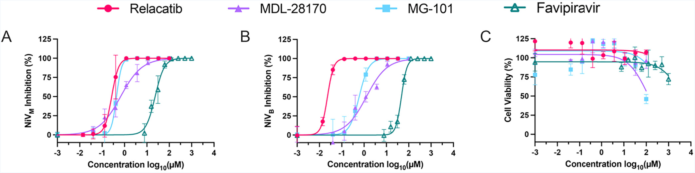
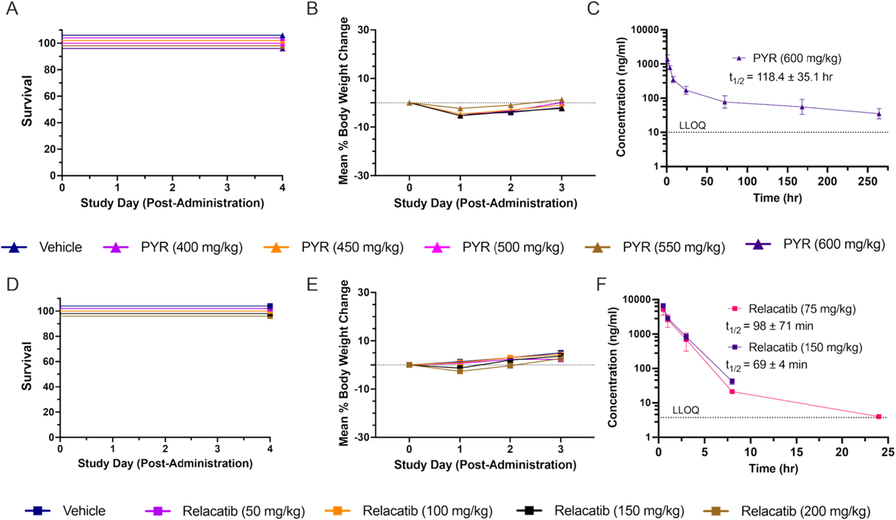
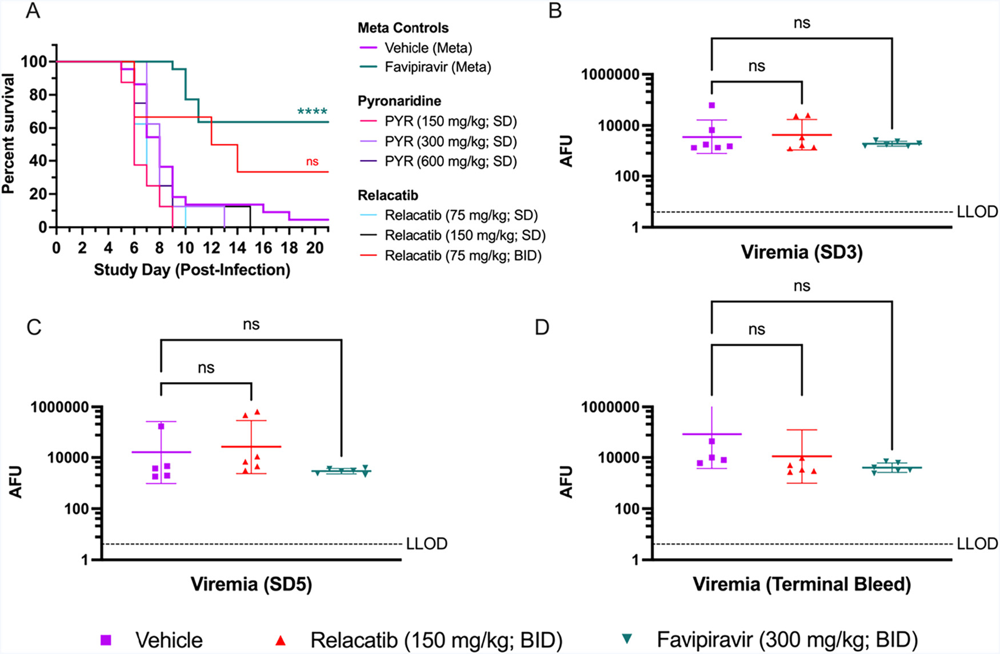

Repurposing Clinical Candidates for Nipah and Hendra Viruses
Study Overview and Objectives: Nipah virus (NiV) and Hendra virus (HeV) are highly lethal, bat-borne zoonotic paramyxoviruses that cause severe respiratory and neurological disease in humans, with no approved small-molecule treatments currently available. While host-cell entry is known to depend on host proteases, the translational feasibility of targeting this pathway with clinically relevant small molecules has remained poorly defined. This 2026 study by Thomas R. Lane et al. systematically evaluates clinical-stage, repurposed small molecules to target host-cell entry using an integrated computational, in vitro, and in vivo framework.
These are the works flow
To evaluate and repurpose clinical-stage small molecules against Nipah virus (NiV) and Hendra virus (HeV), the authors established a comprehensive workflow spanning computational machine learning, in vitro phenotypic assays, and in vivo pharmacokinetic and efficacy studies.
- Computational Modeling and Virtual Screening
- Data Curation: The authors retrieved IC50 and \(K_i\) data for cathepsin L (ChEMBL ID 3837) from the ChEMBL 35 database. Using their in-house, automated e-Clean pipeline, they curated molecular structures by normalising isotopes, removing stereochemistry, disconnecting metals, stripping salts and solvents, neutralizing charges, and canonicalising SMILES strings.
- Model Generation: They generated several regression machine learning models in their proprietary Assay Central software. The models used 2048-bit ECFP6 fingerprints and were trained using seven algorithms: adaptive boosting regression (adar), Bayesian ridge regression (br), elastic net regression (enr), k-nearest neighbors' regression (knnr), random forest regression (rfr), support vector machine regression (svr), and XGBoost regression (xgbr).
- Validation: Models were validated using nested 5-fold cross-validation. In each cycle, 20% of the data was held out, and hyperparameters were optimised via a 5-fold grid search on the remaining 80%.
- Virtual Screening: Using the best-performing models, they screened the MedChemExpress FDA-Approved & Pharmacopeial Drug Library (HY-L066) to prioritize potent cathepsin L inhibitor candidates.
- In Vitro Phenotypic Antiviral Assays
- Virus and Cell Propagation: The wild-type Hendra virus (genotype 1), wild-type NiV (Malaysia and Bangladesh strains), and recombinant reporter strains (rNiVM-Gluc-eGFP and rNiVB-Gluc-eGFP, which express Gaussia luciferase and enhanced GFP) were propagated in Vero E6 cells.
- Plaque Reduction (PR) Assay: Vero CCL81 cells were pretreated with individual compounds for up to 4 hours. Cells were then infected with wild-type virus to yield at least 50 plaques per well. Compounds were maintained in a 1.0% methylcellulose and 2× MEM overlay mixture containing 2% FBS and 2% penicillin-streptomycin. Plates were incubated at 37°C under 5% CO2 for 2 days, fixed in 10% buffered formalin, and stained with 0.25% crystal violet to calculate plaque reduction.
- Cellular Cytotoxicity Assay: Vero CCL81 cells were tested in the absence of virus using a neutral red-based toxicology assay kit to calculate the 50% cell cytotoxic dose (CC50).
- Gaussia Luciferase Assays: Vero CCL81 cells were seeded in 96-well plates at 10,000 cells/well. Cells were pretreated for 4 hours and infected with rNiVM-Gluc-eGFP or rNiVB-Gluc-eGFP at a multiplicity of infection (MOI) of 0.0005. After 48 hours of infection, luminescence was measured on a Cytation platform using the Pierce Gaussia Luciferase Glow Assay kit.
- Calpain-1 Enzymatic Assay
- Assay Method: Human erythrocyte-derived calpain-1 was preincubated with five-point, 10-fold serial dilutions of test compounds (or vehicle control) in a modified 50 mM Tris-HCl buffer (pH 7.2) for 15 minutes at 37°C.
- Detection: Enzymatic cleavage was initiated by adding 25 µM Suc-LLVY-AMC (a fluorogenic substrate). Following a 15-minute incubation, the release of 7-amino-4-methylcoumarin (AMC) was measured spectrofluorometrically (excitation: 360 nm, emission: 465 nm).
- In Vivo Hamster Tolerability and Pharmacokinetics (PK)
- Animal Welfare and Ethics: Work with live, infectious NiV and HeV was conducted in biosafety level 4 (BSL4) containment facilities at the University of Texas Medical Branch (UTMB). Animal studies complied with guidelines approved by the Institutional Animal Care and Use Committee (IACUC).
- Formulations: Pyronaridine was formulated in 5% Kolliphor HS 15 (Solutol) in 95% PBS. Relacatib was formulated in 2% DMSO and 98% hydroxypropyl-β-cyclodextrin (HPβCD) (20%); 1% Tween 80 was added to higher concentrations (15 and 20 mg/mL) to manage suspension heterogeneity.
- Maximum Tolerated Dose (MTD): Formulations were administered via oral gavage (PO) to male Syrian hamsters (three animals per group). They used a dose-escalation protocol starting with the lowest dose. Hamsters were observed closely during the first 15 minutes and 1 hour post-dose, and clinical symptoms and body weight were monitored twice daily for up to 72 hours.
- PK Dosing and Sampling:
- Hamsters received single oral doses: pyronaridine at 600 mg/kg (mixed male/female) or relacatib at 75 and 150 mg/kg (males only).
- Blood was collected from a carotid artery catheter into K2EDTA-coated tubes at specified intervals, chilled on ice, and centrifuged at 2,500g for 15 minutes at 4°C to harvest plasma.
- Bioanalytical Mass Spectrometry (LC-MS/MS): Plasma samples were processed using protein precipitation with acetonitrile (ACN) and analyzed on a Triple Quad 5500+ mass spectrometer using electrospray ionization in positive ion mode and multiple reaction monitoring (MRM). Analytes were separated on a Synergi Fusion-RP column. Concentration curves were evaluated via weighted linear regression. Non-compartmental analysis (NCA) of the plasma concentration data was performed using WinNonlin.
- In Vivo Nipah Virus Efficacy Studies
- Challenge Protocol: Five- to six-week-old Syrian golden hamsters (equal sex per group) were anesthetized using isoflurane and challenged via intraperitoneal (IP) injection with rNiVM-Gluc-eGFP. Doses were back-titrated and determined as 3 times 10^5 PFU (Study 1), 1.06 times 10^4 PFU (Study 2), or 1.78 times 10^4 PFU (Study 3).
- Treatment Dosing Cohorts:
- Study 1 (Pyronaridine): A single oral dose of pyronaridine (150, 300, or 600 mg/kg) administered immediately post-infection.
- Study 2 (Relacatib Single Dose): A single oral dose of relacatib (75 or 150 mg/kg) administered immediately post-infection.
- Study 3 (Relacatib Multi-Dose): Relacatib administered at 75 mg/kg BID (twice-daily oral gavage) for 14 consecutive days.
- Controls: Negative control animals received vehicle solution matching the treatment group frequency. Positive control animals received favipiravir (300 mg/kg/day BID PO) for 14 consecutive days.
- Clinical Monitoring: Hamsters were assessed daily for 21 days. Health was scored on a 1–4 scale. Hamsters displaying severe morbidity (e.g., respiratory distress, paralysis, or weight loss less than or equal to 20%; score of 4) were immediately euthanized.
- Viremia / Viral Load Quantification: Blood was collected via retro-orbital bleeds on days 3 and 5 post-infection, and during terminal sampling. In Study 3, serum was batch-processed to measure viremia by mixing 20 µL of hamster serum with 50 µL of Gaussia luciferase substrate, acquiring the luminescence signal on a Cytation platform.
These are the best candidate molecules

In vitro inhibition of NiV (A; Malaysia strain, B; Bangladesh strain) using a plaque reduction assay (PR) for a cathepsin L inhibitor, relacatib, MDL-28170, and MG-101, and a favipiravir (T-705) control.

MTD and PK study results for pyronaridine (PYR) and relacatib in Syrian hamster. (A, B) survival and mean body weight change following an oral dose of pyronaridine at 400, 450, 500, 550, or 600 mg/kg. (C) Plasma levels of pyronaridine following a single oral dose at 600 mg/kg. (D, E) survival and mean body weight change following an oral dose of relacatib at 50, 100, 150, or 200 mg/kg. (F) Plasma levels of relacatib following a single oral dose at 75 or 150 mg/kg. LLOQ = lower limit of quantification.

Table 2. Pharmacokinetic Parameters ± SD for Pyronaridine and Relacatib in Syrian Hamster
| compound | dose (mg/kg) | t1/2 (hr) | tmax (hr) | Cmax (ng/mL) | AUClast (h*ng/mL) | AUCinf (h*ng/mL) |
|---|---|---|---|---|---|---|
| pyronaridine | 600 | 118.4 ± 35.1 | 1 ± 0 | 1421 ± 383 | 28,478 ± 3889 | 34,619 ± 5194 |
| relacatib | 75 | 1.12 ± 0.03 | 0.5 ± 0 | 6745 ± 774 | 10,198 ± 906 | 10,272 ± 925 |
| relacatib | 150 | 0.88 ± 1.63 | 0.5 ± 0 | 9159 ± 5711 | 16,404 ± 9683 | 16,432 ± 9708 |
NiV efficacy study results. (A) Survival rates plots (Kaplan–Meier) of Syrian hamsters following challenge with rNiVM-Gluc-eGFP when treated with pyronaridine (PYR), relacatib, vehicle, or favipiravir control in three independent studies. Pooled vehicle and favipiravir control data from three independent studies are shown in the main panels for clarity and summary visualization. Control data from each individual study are presented separately in Supporting Figure S7. Statistical significance was determined using a Mantel–Cox test versus the vehicle control; significant differences were only seen in the favipiravir group(s). (B) Viremia levels were determined by luciferase activity in Study 3 only (relacatib and favipiravir BID). No statistically significant viral load was found between the vehicle control and either group in SD3, SD5, or in the terminal bleeds. SD = single dose, BID = twice daily dose, SDX = study day (favipiravir 300 mg/kg, BID study, n = 6; n = 8 for all other studies).

Conclusion
This study systematically evaluates host-directed entry inhibition against the lethal, bat-borne Nipah and Hendra viruses by screening clinical-stage, repurposed small molecules targeting host cathepsin L. Through computational machine learning and in vitro assays, the authors identified several highly potent cathepsin L inhibitors—most notably relacatib, which exhibited nanomolar-to-sub-micromolar antiviral activity against multiple viral strains and was substantially more potent than the clinical control favipiravir in vitro. However, despite this exceptional cell-based efficacy and demonstrated tolerability in Syrian hamsters, neither relacatib nor the antimalarial pyronaridine provided protection in vivo against a lethal, recombinant Nipah virus challenge under the tested dosing regimens. This translational disconnect was primarily attributed to pharmacokinetic limitations rather than definitive biological inefficacy, as relacatib's rapid clearance (with a half-life of approximately one hour) and high rodent plasma protein binding (96.8% bound) severely restricted its unbound systemic exposure in the bloodstream. Consequently, the authors conclude that host-protease inhibition remains a valid therapeutic target, but future clinical translation will require optimized drug formulations, continuous delivery systems (such as intravenous or subcutaneous infusions), or combination therapies to achieve sustained target engagement.